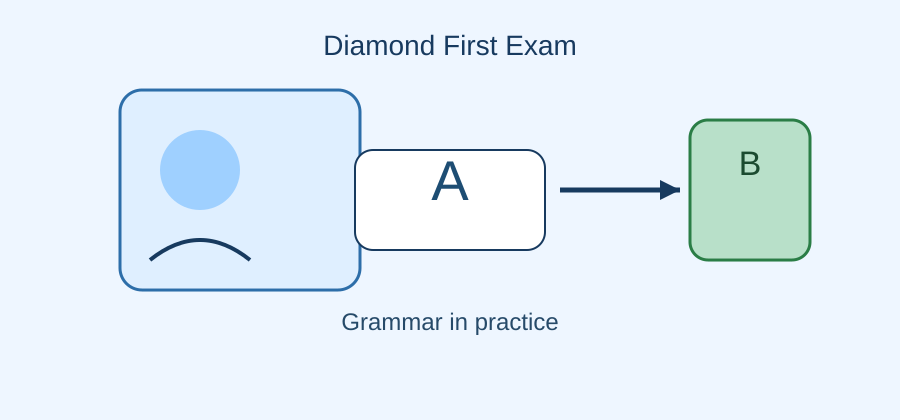
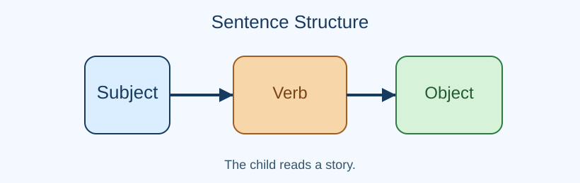
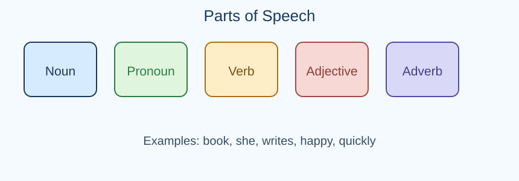
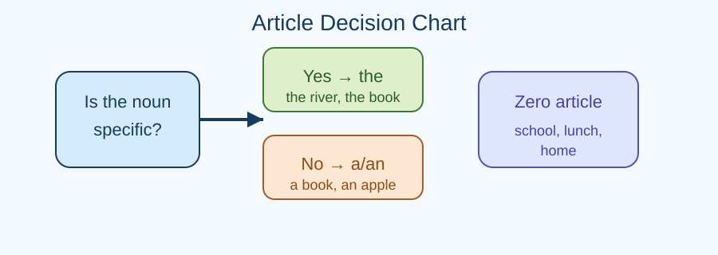
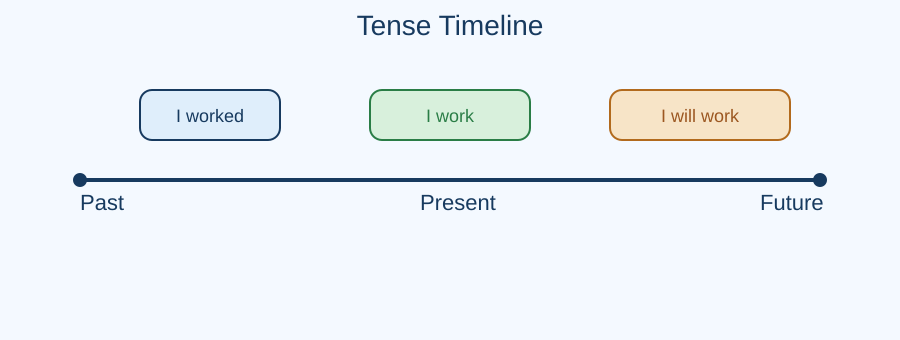
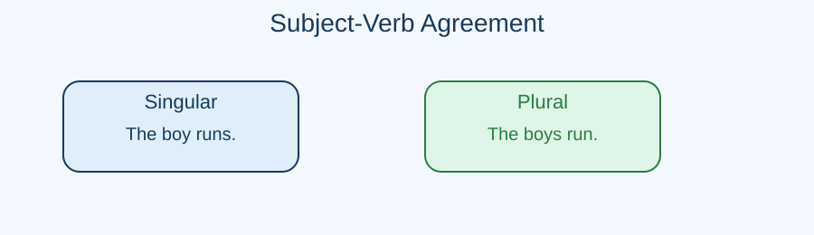
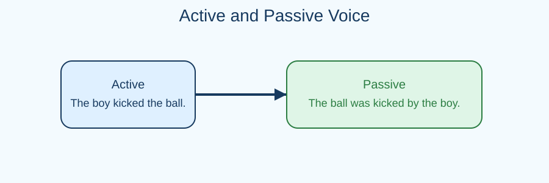
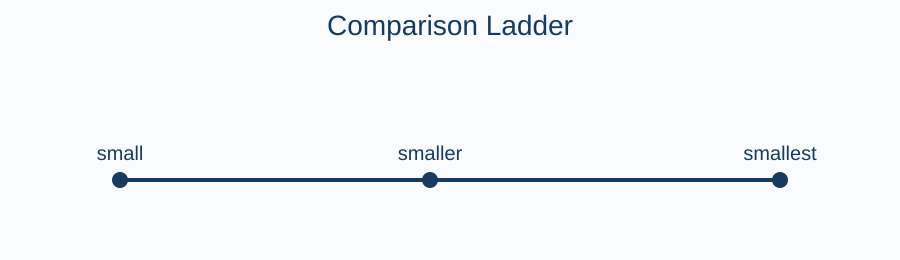
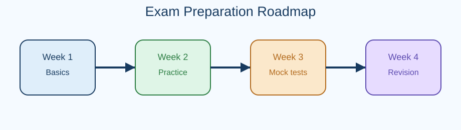

A PM PVT. LTD. COMPANY · INDIA
DIAMOND FIRST EXAM
ENGLISH GRAMMAR WORKBOOK
Premier General English & Grammar Practice

Title Page
Diamond First Exam Series: Premier General English & Grammar Workbook
Prepared for learners seeking confidence in grammar, vocabulary, sentence structure, and communication skills.
Copyright draft: “Copyright © [YEAR] A PM Pvt. Ltd. Company, India. All rights reserved...”
Disclaimer: This workbook is an independent educational resource and does not guarantee examination results or imply endorsement by any examination authority.
Preface
English is not merely a school subject; it is a practical skill used in speaking, writing, reading, and thinking clearly. This workbook has been developed to help learners understand grammar step by step and apply it confidently in real-life communication.
Each unit begins with a simple explanation, followed by examples, visual aids, guided practice, and exercises. The purpose is to make grammar accessible, useful, and interesting for learners in India who are preparing for school exams, college entrance tests, job interviews, and daily communication.
Use this book slowly, revise consistently, and practise regularly. Grammar becomes easier when it is understood by patterns and applied with examples.
Contents
- Front Matter1–5
- Unit 1: Foundations of English Grammar6–15
- Unit 2: Parts of Speech16–25
- Unit 3: Articles, Determiners, and Quantifiers26–35
- Unit 4: Tenses and Time Concepts36–45
- Unit 5: Subject-Verb Agreement46–55
- Unit 6: Modals and Auxiliary Verbs56–65
- Unit 7: Active and Passive Voice66–75
- Unit 8: Direct and Indirect Speech76–85
- Unit 9: Prepositions, Conjunctions, and Linkers86–95
- Unit 10: Conditionals96–105
- Unit 11: Relative Clauses106–115
- Unit 12: Adjectives, Adverbs, and Comparison116–125
- Unit 13: Punctuation and Capitalisation126–135
- Unit 14: Error Spotting and Editing136–145
- Unit 15: Final Revision and Mock Tests146–150
How to Use This Book
- Read the explanation slowly and underline key words.
- Study examples before attempting exercises.
- Attempt the guided practice and then the independent practice.
- Check the answer key and read the short explanation given for each answer.
- Revise the chapter again before moving to the next unit.
Remember: English grammar is a pattern-based skill. The more you practise, the more natural it becomes.
Unit 1
Foundations of English Grammar
Grammar is the set of rules that helps us put words together into meaningful sentences. A sentence must have meaning, a clear subject, and a verb. Without grammar, communication becomes unclear.
Example: The girl reads a book. Here, girl is the subject, reads is the verb, and book is the object.
Sentence parts
- Subject: Who or what the sentence is about.
- Predicate: What the subject does or is.
- Verb: Action or state.
- Object: The receiver of the action.

Phrase and clause
A phrase is a group of words that does not make a complete sentence. Example: in the morning.
A clause is a group of words with a subject and verb. Example: while we were waiting. Some clauses are independent and can stand alone; others are dependent.
Sentence types
| Type | Purpose | Example |
|---|
| Declarative | Statement | She writes well. |
| Interrogative | Question | Do you know the answer? |
| Imperative | Command/order | Please close the door. |
| Exclamatory | Strong feeling | What a brilliant idea! |
Diagnostic Test
1. Choose the complete sentence: A) After reaching school B) The teacher entered the room C) In the library D) Because it was raining
Answer: B. It has a subject and a verb.
2. Identify the subject in: "The children finished their project."
Answer: "The children".
3. Which is a clause? A) on the table B) after the bell C) the children laughed D) very carefully
Answer: C.
Unit 2
Parts of Speech
Words are classified according to their use in a sentence. The eight main parts of speech are nouns, pronouns, verbs, adjectives, adverbs, prepositions, conjunctions, and interjections. Articles and determiners are also important.
| Part of speech | Function | Example |
|---|
| Noun | Names a person, place, thing, or idea | teacher, Mumbai, book |
| Pronoun | Replaces a noun | he, she, it, they |
| Verb | Shows action or state | run, is, become |
| Adjective | Describes a noun | brave, clever, blue |

Common mistakes
- Using an adjective where an adverb is needed: She sings beautiful. → She sings beautifully.
- Confusing pronouns: Between you and I → Between you and me
- Wrong preposition: He is good in English → He is good at English
Practice
Identify the part of speech of the underlined word: The quick fox jumped.
Answer: Adjective.
Unit 3
Articles, Determiners, and Quantifiers
Articles specify whether a noun is definite or indefinite. The three articles are a, an, the. Zero article means no article is used.
a is used before consonant sounds; an before vowel sounds; the for definite reference.

| Use | Example |
|---|
| General singular noun | a book |
| Vowel sound | an umbrella |
| Specific noun | the book on the desk |
Quantifiers
many/much are used with countable and uncountable nouns; few/a few and little/a little show quantity and attitude. Example: few students suggests not many; a few students suggests some.
Fill in the blanks: I have ___ money left, but ___ friends to help me.
Answer: little, a few.
Unit 4
Tenses and Time Concepts
A tense shows the time of an action. English has present, past, and future forms, and each may be simple, continuous, perfect, or perfect continuous.

| Tense | Use | Example |
|---|
| Simple present | Regular actions | I walk to school. |
| Present continuous | Action happening now | I am walking now. |
| Present perfect | Action completed up to now | I have finished my work. |
| Simple past | Completed past action | I walked yesterday. |
Time expressions
- Simple present: every day, usually, often
- Present continuous: now, at this moment, today
- Present perfect: since, for, already, yet
- Past simple: yesterday, last week, ago
Exam tip: Choose tense based on the time signal and the event's completion status.
Unit 5
Subject-Verb Agreement
A singular subject takes a singular verb, and a plural subject takes a plural verb. Example: The boy runs. / The boys run.
Intervening phrases do not change the agreement: The price of the apples is high. Here, "price" is the subject, not "apples".

Unit 6
Modals and Auxiliary Verbs
Modals express ability, permission, obligation, possibility, advice, or necessity. Common modals are can, could, may, might, must, should, ought to, will, would, shall.
| Modal | Meaning | Example |
|---|
| can | ability | I can swim. |
| must | necessity | You must wear a helmet. |
| should | advice | You should revise daily. |
| may | permission/possibility | You may leave early. |
Unit 7
Active and Passive Voice
In the active voice, the subject performs the action. In the passive voice, the receiver of the action becomes the focus.
Active: The chef cooked the meal. Passive: The meal was cooked by the chef.

Unit 8
Direct and Indirect Speech
Direct speech repeats the exact words spoken. Indirect speech reports them without quoting words exactly. Example: He said, “I am late.” → He said that he was late.
When reporting speech, pronouns, time expressions, and sometimes tenses may change. This is called backshift.
Unit 9
Prepositions, Conjunctions, and Linkers
Prepositions show relation of time, place, direction, or manner. Example: at 9 o’clock, in the room, to the station, with care.
Conjunctions connect words or clauses. Coordinating conjunctions include and, but, or, so, yet, nor, for. Subordinating conjunctions include because, although, if, when, while, since.
Unit 10
Conditionals and Real/Unreal Situations
Conditionals show dependence between a condition and a result. They are used in daily life, planning, warnings, and hypothetical situations.
| Conditional | Use | Example |
|---|
| Zero | General truth | If water freezes, it turns solid. |
| First | Real future | If it rains, we will stay inside. |
| Second | Imaginary present/future | If I had a boat, I would travel. |
| Third | Past unreal | If I had studied, I would have passed. |
Unit 11
Relative Clauses and Sentence Formation
Relative clauses add information about nouns. They often begin with who, whom, whose, which, that.
The student who topped the class received a prize. Here, “who topped the class” adds information about the student.
Sentence formation rules
- Every sentence should have a subject and a verb.
- A fragment is not a complete sentence.
- Run-on sentences should be split or joined properly.
Unit 12
Adjectives, Adverbs, and Degrees of Comparison
Adjectives describe nouns; adverbs modify verbs, adjectives, or other adverbs. Example: She is a fast runner. / She runs fast.
| Degree | Example |
|---|
| Positive | small |
| Comparative | smaller |
| Superlative | smallest |

Unit 13
Punctuation, Capitalisation, and Formatting
Punctuation helps readers understand pauses, meaning, and emphasis. Correct punctuation makes writing clear and professional.
- Full stop: ends a statement.
- Comma: separates parts of a sentence.
- Question mark: ends a question.
- Exclamation mark: shows strong feeling.
Unit 14
Error Spotting, Editing, and Sentence Improvement
Error spotting means reading carefully and identifying grammar mistakes such as wrong articles, tense errors, agreement problems, and incorrect prepositions.
Example: He do not know the answer. → He does not know the answer.
Editing checklist
- Check subject-verb agreement
- Check tense consistency
- Check articles and pronouns
- Check prepositions and conjunctions
- Check spelling and punctuation
Unit 15
Final Revision, Mock Tests, and Exam Readiness
A good revision plan includes regular reading, short recaps, targeted practice, and time-bound mock tests. Use the book as a practical companion for classroom study and exam preparation.
Exam readiness checklist: Know the grammar rule, recognise the pattern, and apply it quickly and correctly.
Reading Passage 1: The School Garden Project
Riya and her classmates were asked to design a small garden in the school playground. At first, the project seemed difficult, but the students divided the work wisely. Some collected soil, some planted saplings, and some prepared signs explaining the names of flowers. The teacher encouraged them to water the plants regularly and to record the growth every week. Soon, the garden became a place where students gathered to read and relax after lunch.
Comprehension: Why did the project become successful? Answer: because the students shared responsibilities and cared for the plants.
Vocabulary: saplings = young plants, encouraged = motivated, gathered = came together.
Reading Passage 2: The Digital Library
Many schools now use digital libraries to improve reading habits among students. These libraries include e-books, audio versions, and topic-based articles. Students can search for material quickly and save useful notes. The format is especially helpful for learners who need revision material in small, simple sections. Teachers also use the library to assign reading tasks and track progress.
Short-answer: What is the purpose of a digital library? Answer: to help learners access resources quickly and revise effectively.
Model Writing: Formal Letter
Sender's address
12, Ashok Vihar
Delhi
Date: 25 October 2026
To: The Principal
ABC Public School
Delhi
Subject: Request for an English Speaking Club
Respected Sir/Madam,
I am writing to request permission to start an English speaking club in our school. Students need more practice in spoken English, listening, and presentation skills. A weekly club would help improve confidence and communication. I would be grateful if you could consider this request.
Yours faithfully,
Aarav Sharma
Model Writing: Email
To: admissions@college.edu
Subject: Inquiry About English Course
Dear Sir/Madam,
I am a student interested in learning advanced English communication. Please share the course duration, fees, and eligibility. I would also like to know whether classes are available in the evening.
Thank you for your time. I look forward to your reply.
Yours sincerely,
Ananya
Model Paragraph
Good time management is essential for student success. Students who plan their work can complete assignments on time and still find time for revision and rest. A clear study schedule reduces stress and helps learners focus on difficult subjects. When students respect deadlines and revise regularly, they develop discipline and confidence.
Practice: Write a paragraph on “Why reading is important for students.”
Practice Bank: MCQs (1–50)
- Choose the correct sentence: A) She go to school daily. B) She goes to school daily. C) She going to school daily. D) She gone to school daily.
- Which word is a pronoun? A) quickly B) happiness C) they D) blue
- Which sentence is in the passive voice? A) The boy kicked the ball. B) The ball was kicked by the boy. C) The boy is kicking the ball. D) The ball kicks the boy.
- Fill in the blank: I ___ a book now. A) read B) reads C) am reading D) have read
- Choose the correct article: ___ university near my house is excellent. A) A B) An C) The D) No article
- Identify the subject in: “The birds sing in the morning.” A) morning B) sing C) birds D) in
- Which is a conjunction? A) swift B) because C) carefully D) honesty
- A group of words with a subject and verb is called a: A) phrase B) verb C) clause D) adverb
- Which sentence is correct? A) He do not know. B) He does not know. C) He not know. D) He is not know.
- Choose the best option: She is good ___ English. A) on B) at C) in D) with
- Which is the correct comparative? A) more better B) better C) goodest D) most best
- Choose the correct indirect speech: He said, “I am tired.” A) He said that I am tired. B) He said that he was tired. C) He said that he is tired. D) He said I was tired.
- Which sentence uses a modal? A) She writes well. B) She will write tomorrow. C) She wrote yesterday. D) She writes quickly.
- Choose the correct preposition: The book is ___ the table. A) in B) on C) at D) under
- What is the past tense of “go”? A) goed B) went C) going D) gone
- Choose the correct sentence: A) If it rained, we stayed home. B) If it rains, we stay home. C) If it rain, we stay home. D) If it rained, we will stay home.
- Which is a noun? A) quickly B) honest C) honesty D) sing
- Choose the correct punctuation: The teacher said please sit down. A) The teacher said, “Please sit down.” B) The teacher said “please sit down.” C) The teacher said please sit down. D) The teacher said please sit down!
- Which word is an adverb? A) soft B) softly C) softness D) softer
- Which sentence is a question? A) I am late. B) Are you late? C) Please wait. D) What a surprise!
- Select the correct verb form: Neither of the boys ___ late. A) are B) is C) were D) have
- Which sentence is grammatically correct? A) The information are useful. B) The information is useful. C) The informations is useful. D) The information were useful.
- Choose the correct sentence: A) She writes very beautifully. B) She writes very beauty. C) She writes very beautiful. D) She writes beauty.
- Which sentence uses a relative clause? A) I slept early. B) The book that I bought is new. C) Please leave. D) The dog barked loudly.
- Choose the correct form of the verb: By next year, I ___ my course. A) complete B) completed C) will complete D) will have completed
- Which word means “very tired”? A) exhausted B) noisy C) curious D) mild
- Choose the correct article: ___ honest man was waiting outside. A) A B) An C) The D) No article
- Which is the correct passive form? A) A gift was given to me. B) A gift is give to me. C) A gift gave me. D) A gift were given to me.
- Choose the correct word: I have ___ apples left. A) much B) few C) little D) many
- Which sentence is in the future continuous tense? A) I eat lunch. B) I am eating lunch. C) I will be eating lunch. D) I have eaten lunch.
- Which phrase is a prepositional phrase? A) very fast B) under the tree C) happy children D) run quickly
- Select the correct sentence: A) The teacher and the student are late. B) The teacher and the student is late. C) The teacher and the student was late. D) Teacher and student are late.
- Which is a synonym of “rapid”? A) slow B) quick C) tired D) weak
- Choose the correct phrase: A) in the noon B) at noon C) on noon D) by noon
- Which word is an interjection? A) wow B) under C) however D) before
- Choose the correct sentence: A) I have met him yesterday. B) I met him yesterday. C) I am meeting him yesterday. D) I was meet him yesterday.
- Which is the correct superlative? A) most beautiful B) beautifuler C) more beautiful D) beautifullest
- Identify the error: “He is more wiser than his brother.” A) more B) wiser C) than D) his
- Choose the correct sentence: A) If I were you, I would apologise. B) If I was you, I would apologise. C) If I am you, I would apologise. D) If I were you, I apologise.
- Which is a demonstrative adjective? A) this B) quickly C) before D) they
- Choose the correct phrase: A) a few informations B) a little information C) many informations D) much informations
- Which sentence uses “there” correctly? A) There are many books on the shelf. B) There is many books on the shelf. C) There are much books. D) There is books on the shelf.
- Choose the correct plural: A) childs B) children C) childs’ D) childes
- Which sentence is correctly punctuated? A) We visited Agra, Jaipur and Delhi. B) We visited Agra, Jaipur, and Delhi. C) We visited Agra Jaipur and Delhi. D) We visited Agra Jaipur, and Delhi.
- Choose the correct answer: What is the opposite of “generous”? A) kind B) stingy C) broad D) lively
- Which sentence uses the present perfect tense? A) I will visit the zoo. B) I visited the zoo. C) I have visited the zoo. D) I am visiting the zoo.
- Choose the correct sentence: A) Neither of the girls are ready. B) Neither of the girls is ready. C) Neither of the girls were ready. D) Neither girls is ready.
- Which is a synonym of “brief”? A) long B) concise C) noisy D) weak
- Choose the best word: The teacher found the answer ___ difficult to explain. A) too B) enough C) very D) so
- Which sentence is correctly written? A) She enjoys to read novels. B) She enjoys reading novels. C) She enjoyed to read novels. D) She enjoy reading novels.
- Complete the sentence: We ___ to the library every Saturday. A) goes B) go C) going D) gone
- Choose the correct sentence: A) He came in time. B) He came on time. C) He came at time. D) He came by time.
- Which word is a noun? A) graceful B) gracefully C) grace D) graced
- Choose the correct answer: “I _____ to the market yesterday.” A) was going B) went C) go D) gone
Practice Bank: Fill in the Blanks (51–85)
- She ___ breakfast before leaving home.
- Either the manager or the staff ___ responsible.
- It is important to ___ your work carefully.
- There are ___ students in the class.
- We have lived here ___ 2018.
- He was punished ___ his carelessness.
- ___ of the two options is acceptable.
- The children are playing ___ the park.
- I saw ___ interesting film yesterday.
- She has ___ patience with young children.
- Do you know ___ he came late?
- He ___ to finish before sunset.
- By the time we arrived, the train ___ already left.
- It’s not possible to solve this ___ luck.
- He is allergic ___ peanuts.
- We ___ lunch when the power failed.
- ___ the rain, we continued the match.
- There is a little ___ left in the bottle.
- She looks ___ her mother.
- A number of students ___ absent today.
- She asked me where ___ going.
- I am tired, ___ I will still complete the task.
- He was accused ___ cheating.
- We need ___ information before deciding.
- The report is ___ important to ignore.
- ___ you help me with this question?
- It is ___ to be late for the interview.
- I prefer tea ___ coffee.
- Try to finish the task ___ you leave.
- He did not know that the gift ___ for him.
- We went ___ foot to the market.
- She is the ___ student in the class.
- He will meet us ___ Monday.
- There is no point ___ arguing.
- Each of the boys ___ a promise.
- Keep the books ___ the table.
- The patient is better ___ yesterday.
- She wrote the letter ___ her own hand.
- If you study regularly, you ___ succeed.
- He left the room without ___ anybody.
- What is the meaning ___ this phrase?
- Not only the students ___ the teacher was tired.
- A batch of mangoes ___ in the basket.
- He insisted ___ coming with us.
- The moon looked ___ the clouds.
- One should not laugh ___ others.
- Neither of the answers ___ correct.
- She was wearing a dress ___ matched the occasion.
- You may borrow my notebook ___ you return it tomorrow.
- He has read ___ the stories in the book.
- Do not depend ___ luck.
- We saw the artist ___ the stage.
- She soon realized that her idea ___ practical.
- Many people ___ to the event last night.
- He was worried ___ the delay.
- Our team worked ___ to finish the project.
Practice Bank: Short Answer (86–110)
- What is the difference between a phrase and a clause?
- Write a sentence using the present perfect tense.
- What is an adjective? Give one example.
- Write a sentence with a modal verb.
- Explain the difference between a noun and a pronoun.
- Write one sentence in the passive voice.
- What is the function of a conjunction?
- Give one example of a zero conditional sentence.
- Write a sentence using “if” in the second conditional.
- What is a relative clause?
- Name two common prepositions of time.
- What is the rule for subject-verb agreement with “either/or”?
- Write one sentence using a comparative adjective.
- What is the difference between “few” and “a few”?
- Write one sentence in indirect speech.
- Explain the use of the article “the.”
- What is an interjection? Give one example.
- Write one sentence using a linking word that shows contrast.
- What is the purpose of punctuation?
- Write one sentence in the future continuous tense.
- What is the difference between “many” and “much”?
- Write a sentence with an adverb.
- Define a run-on sentence.
- Write one example of a sentence beginning with an adverbial phrase.
- Why is proofreading important?
Practice Bank: Matching Items (111–135)
- Match the word with its meaning: a) rapid b) humble c) generous d) candid
- Match the sentence type: a) declarative b) imperative c) interrogative d) exclamatory
- Match the modal: a) ability b) obligation c) advice d) possibility
- Match the words with their person/thing categories: a) teacher b) Ganga c) bravery d) mountain
- Match the voice: a) active b) passive
- Match the word to its part of speech: a) quickly b) table c) happy d) and
- Match the grammar term: a) noun phrase b) clause c) adverb d) article
- Match the tense: a) simple past b) present continuous c) present perfect d) future perfect
- Match the preposition: a) on b) in c) at d) under
- Match the punctuation mark to use: a) after a question b) after an exclamation c) between two independent clauses d) to show possession
- Match the relative pronoun: a) person b) thing c) possession d) choice
- Match the condition type: a) zero b) first c) second d) third
- Match the quantifier: a) much b) many c) little d) a few
- Match the meaning: a) obvious b) faint c) wealthy d) cautious
- Match the word to its opposite: a) accept b) ancient c) modest d) release
- Match the sentence with its function: a) statement b) order c) suggestion d) warning
- Match the speech type: a) direct b) indirect
- Match the comparison: a) positive b) comparative c) superlative
- Match the writing format: a) formal letter b) email c) notice d) dialogue
- Match the phrase to its meaning: a) in a hurry b) in the long run c) at once d) in trouble
- Match the sentence with corrective answer: a) She don’t know b) She does not know c) The girls is dancing d) The girls are dancing
- Match the word with the sentence: a) because b) although c) however d) therefore
- Match the article with the noun: a) a b) an c) the
- Match the writing task: a) paragraph b) notice c) dialogue d) letter
- Match the grammar skill: a) error spotting b) cloze c) sequencing d) transformation
Practice Bank: Grammar and Sentence Correction (136–170)
- Correct: She do not know the answer.
- Correct: The children is playing in the garden.
- Correct: I have ate my lunch.
- Correct: He is more better today.
- Correct: The book on the shelf are dusty.
- Correct: Neither of the boys were present.
- Correct: The information are important.
- Correct: He is good in speaking.
- Correct: She goes to school every day last year.
- Correct: If I will see him, I will inform you.
- Correct: They have waited for me since two hours.
- Correct: A few people have very little patience.
- Correct: The teacher and the student was present.
- Correct: Please explain me the rule.
- Correct: He asked me that I was late.
- Correct: I am agreeing with you completely.
- Correct: I am having a car since 2019.
- Correct: The more you practise, the more better you become.
- Correct: We can to finish before sunset.
- Correct: She is fond to music.
- Correct: This is the most easiest question.
- Correct: He not came yesterday.
- Correct: The dog barked loud.
- Correct: There is many reasons.
- Correct: He prefers tea than coffee.
- Correct: The principal said me to wait.
- Correct: Because he was ill, so he stayed at home.
- Correct: Unless you will study, you cannot pass.
- Correct: I wish I have more time.
- Correct: She arrived at Monday.
- Correct: I look forward to hear from you.
- Correct: He is known for his honesty, and also for his kindness.
- Correct: Hardly had he entered when the lights went off.
- Correct: We discussed about the new policy.
- Correct: The report must be submit by Friday.
- Correct: It is not worth to argue.
- Correct: Everyone have their own opinion.
- Correct: She asked that where I was going.
- Correct: The place is enough quiet.
- Correct: I wish to complete my work before 5 p.m. and then I had dinner.
- Correct: He is the older student in the class.
- Correct: The pair of shoes are expensive.
- Correct: I have no time to waste, and I am in hurry.
- Correct: He got down from the bus at the station and then he bought a ticket.
- Correct: In case of doubt, contact me at any time.
- Correct: Neither the headmaster nor the teachers was available.
- Correct: I have never saw such a sight.
- Correct: He looks very much anxious.
- Correct: Because of the heavy rain, the game was cancelled; although everyone was disappointed.
Practice Bank: Vocabulary (171–200)
- Give a synonym of “brave.”
- Give an antonym of “ancient.”
- What is the antonym of “increase”?
- Use the word “diligent” in a sentence.
- Give a synonym of “difficult.”
- What is the meaning of the idiom “at the eleventh hour”?
- Write one word for “a person who writes poems.”
- Give an antonym of “visible.”
- Use the word “benefit” in a sentence.
- What is the synonym of “sincere”?
- Give an antonym of “allow.”
- What is one word for “a person who can speak two languages”?
- Use the word “cautious” correctly in a sentence.
- Give a synonym of “honest.”
- Write the meaning of “break the ice.”
- Give an antonym of “former.”
- Use the word “valuable” in a sentence.
- Give a synonym of “safeguard.”
- What is a one-word substitute for “a place where books are kept”?
- Give an antonym of “gloomy.”
- Use the word “steady” in a sentence.
- What is the meaning of “spill the beans”?
- Give a synonym of “mischievous.”
- Write one word for “a speech delivered in front of an audience.”
- Give an antonym of “strict.”
- Use the word “confident” in a sentence.
- Give a synonym of “fierce.”
- What does “under the weather” mean?
- Give an antonym of “broad.”
- Use the word “prepare” in a sentence.
- Give a synonym of “calm.”
- Write one word for “the study of plants.”
- Use the word “defend” in a sentence.
- Give an antonym of “accept.”
- What is the meaning of “on the same page”?
- Give a synonym of “talented.”
- Use the word “hesitate” in a sentence.
- What is a one-word substitute for “a person who sees the future”?
- Give an antonym of “rare.”
- Use the word “slender” in a sentence.
- What is the synonym of “wealthy”?
- Give one word for “a person who is trained to perform operations in a hospital.”
- Use the word “kindle” in a sentence.
- Give an antonym of “careless.”
- What is the meaning of ��hard of hearing”?
- Give a synonym of “eager.”
- Write one word for “a person who is not able to read or write.”
- Use the word “robust” in a sentence.
- Give an antonym of “soft.”
- Give a synonym of “silent.”
- Use the word “improve” in a sentence.
- What is the meaning of “by and large”?
Practice Bank: Tense, Article, Preposition, and Voice (201–230)
- Change to passive: The gardener watered the plants.
- Fill in the blank: I ___ never seen such a place before.
- Choose the correct article: ___ apple a day keeps the doctor away.
- Fill in the blank: She is interested ___ music.
- Change to passive: The students completed the assignment.
- Fill in the blank: We met ___ a coffee shop.
- Choose the correct tense: By ten o'clock, I ___ my work. (finish)
- Use the correct article: ___ Himalayas are beautiful.
- Use the right preposition: She is good ___ solving puzzles.
- Change to passive: They will build a bridge.
- Fill in the blank: I have been waiting ___ 9 a.m.
- Choose the correct article: I need ___ umbrella today.
- Change to passive: Someone stole my bicycle.
- Fill in the blank: He sat ___ the window.
- Choose the correct tense: She ___ for the exam since last week. (prepare)
- Change to passive: The chef prepared a special meal.
- Fill in the blank: We walked ___ the road carefully.
- Choose the correct article: He visited ___ Taj Mahal.
- Use the right preposition: The children were playing ___ the garden.
- Change to passive: The committee approved the proposal.
- Fill in the blank: There is a note ___ the desk.
- Use the correct tense: If she studies well, she ___ the test. (pass)
- Choose the correct article: It is ___ honour to meet you.
- Use the correct preposition: The bus arrived ___ time.
- Change to passive: The company has launched a campaign.
- Fill in the blank: He will return ___ two days.
- Choose the correct article: ___ honest answer pleased everyone.
- Use the right preposition: I am afraid ___ dogs.
- Change to passive: The teacher checked the papers.
- Fill in the blank: They walked ___ the bridge to the village.
Practice Bank: Reading Comprehension (231–260)
- Read: “Many students prefer self-study because it allows them to work at their own pace.” What is the main idea?
- Read: “The museum was closed for renovation and reopened with new exhibits.” What was the reason for closure?
- Read: “Water conservation is necessary during summer because rainfall is low.” What is the central idea?
- Read: “Rinita completed the task before the deadline and submitted it with confidence.” What do we learn about Rinita?
- Read: “The library committee ensured that all books were shelved neatly.” What did the committee do?
- Read: “Our bus left at 6 a.m. and reached the station before sunrise.” What was the time of arrival?
- Read: “The old bridge was repaired using stronger materials.” What changed?
- Read: “Because of the storm, the parade was postponed.” Why was the parade delayed?
- Read: “Teachers encourage students to present ideas clearly and speak respectfully.” What is the advice?
- Read: “The youth club organised a cleanliness drive in the neighbourhood.” What event took place?
- Read: “The book was available at the shop, but the price was high.” What is the contrast?
- Read: “We carried a first-aid kit because the hike was long and remote.” Why did they carry the kit?
- Read: “The principal praised the team for their cooperation and discipline.” Who was praised?
- Read: “The teacher explained the concept twice and still asked questions to check understanding.” What was the teacher’s method?
- Read: “Students who revise daily often score better in tests.” What is the conclusion?
- Read: “The village depends on solar energy because the power supply is irregular.” Why is solar energy used?
- Read: “A strong network of volunteers helped the flood victims.” What helped the victims?
- Read: “The team reviewed the details carefully before submitting the report.” What did they do before submission?
- Read: “The train was delayed by fog, but passengers remained calm.” What is the tone of the sentence?
- Read: “Raju joined the club to improve his public speaking skills.” Why did Raju join the club?
- Read: “The factory installed filters to reduce pollution.” What was the purpose of the filters?
- Read: “The doctor advised more rest after the operation.” What was the doctor’s advice?
- Read: “The new schedule gives students more time for revision.” What is the effect of the schedule?
- Read: “Children need healthy food, regular exercise, and enough sleep.” What are the three needs mentioned?
- Read: “Amit was late because he missed the bus.” Why was Amit late?
- Read: “The shop offered discounts during the festival season.” What happened during the festival season?
- Read: “The essay remained incomplete because there was no internet access.” Why was the essay incomplete?
- Read: “A sound environment helps students concentrate better.” What does the sentence suggest?
- Read: “The farmers were happy when the rain finally arrived.” Why were they happy?
- Read: “The learners worked in groups to complete the project.” How did they complete the project?
Practice Bank: Sentence Formation and Rearrangement (261–280)
- Form a sentence using the words: school / early / we / reached.
- Arrange: difficult / was / the / question / surprisingly.
- Make a sentence with “because” and “rain.”
- Arrange: on / the / table / notebook / is / my.
- Write a sentence using the comparative form of “strong.”
- Rearrange: the / finished / I / assignment / before / lunch.
- Form a sentence with “if” and “study” in the first conditional.
- Arrange: patiently / waited / for / we / the / bus.
- Make a sentence with “who” as a relative pronoun.
- Arrange: never / he / before / such / saw / a / sight.
- Write a sentence using present perfect continuous.
- Rearrange: is / the / nearest / library / here.
- Form a sentence with “although” and “late”.
- Arrange: has / the / announced / principal / result.
- Write a sentence using passive voice.
- Arrange: beautifully / sings / she / every / evening.
- Form a sentence with “will” to express a future plan.
- Arrange: clean / keep / should / classroom / we / the.
- Write a sentence using a modal of permission.
- Arrange: decided / the / teacher / to / postpone / test.
Practice Bank: Writing and Practical English Tasks (281–300)
- Write a short paragraph on “The importance of discipline.”
- Write a note to a friend inviting them to a study group.
- Write a formal notice for a school debate competition.
- Write an email asking for information about a course.
- Write a dialogue between a student and a librarian.
- Write a letter to your principal requesting a sports day.
- Write a paragraph on “How to improve English speaking skills.”
- Write a short essay on “Clean India.”
- Write a notice for a science exhibition.
- Write a message to a classmate explaining the homework assignment.
- Write a dialogue between a doctor and a patient.
- Write a formal application for leave.
- Write a paragraph on “Why reading newspapers is useful.”
- Write an email to a teacher asking for guidance.
- Write a short speech on “Value of teamwork.”
- Write a dialogue between two friends discussing exam preparation.
- Write a notice for a blood donation camp.
- Write a paragraph on “How technology helps education.”
- Write a formal request to the principal for library books.
- Write a paragraph on “Healthy habits for students.”
Answer Key: Unit and Practice Highlights
Unit 1: Complete sentence: a sentence must contain a subject and a verb. Example: The student writes clearly.
Unit 2: Nouns name; pronouns replace; verbs show action; adverbs modify; prepositions show relation.
Unit 3: Use a before consonant sounds; an before vowel sounds; the for a specific noun.
Unit 4: Tense shows time: present, past, and future; use time words to decide the correct form.
Unit 5: Singular subject + singular verb; plural subject + plural verb. Intervening phrases do not change agreement.
Unit 6: Modals express ability, permission, obligation, possibility, and advice.
Unit 7: Active voice: subject acts; passive voice: subject receives action.
Unit 8: Indirect speech usually changes pronouns and tense; direct speech repeats exact words.
Answer Key: Practice Bank
1. B 2. C 3. B 4. C 5. B 6. C 7. B 8. C 9. B 10. B 11. B 12. B 13. B 14. B 15. B 16. B 17. C 18. A 19. B 20. B 21. B 22. B 23. B 24. C 25. B 26. B 27. C 28. A 29. B 30. B 31. B 32. B 33. B 34. C 35. B 36. B 37. B 38. B 39. B 40. B 41. B 42. B 43. B 44. B 45. B 46. B 47. C 48. B 49. C 50. B
51. ate 52. is 53. check 54. many 55. since 56. for 57. Either 58. in 59. an 60. a lot of 61. why 62. has 63. had 64. by 65. to 66. were eating 67. Despite 68. water 69. like 70. are 71. whether 72. but 73. for 74. some 75. very 76. Could 77. bad 78. rather 79. before 80. was 81. on 82. best 83. on 84. no 85. on
86. A clause has a subject and a verb; a phrase does not. 87. I have completed my assignment. 88. An adjective describes a noun. 89. You should revise daily. 90. A noun names a person/place/thing; a pronoun replaces it. 91. The door was opened by the guard. 92. It connects words or clauses. 93. If water freezes, it becomes ice. 94. If I had more time, I would travel. 95. It is a clause that gives extra information about a noun. 96. At, in, on. 97. The verb agrees with the subject closest to it. 98. This house is larger than that one. 99. Few means not many; a few means some. 100. He said that he was tired. 101. The is used for a definite, specific noun. 102. An interjection is a sudden exclamation. 103. Although it is late, we are continuing. 104. Punctuation clarifies meaning and structure. 105. I will be travelling at 8 p.m. 106. Many refers to countable nouns; much to uncountable nouns. 107. She spoke softly. 108. A run-on sentence joins two independent clauses without proper punctuation. 109. After the bell rang, we entered the class. 110. Proofreading reduces errors.
Glossary
| Word | Meaning |
|---|
| adjective | word that describes a noun |
| adverb | word that modifies a verb or adjective |
| clause | group of words with a subject and verb |
| conjunction | word that joins ideas or clauses |
| determiner | word that introduces a noun |
| modal | helper verb showing ability, obligation, or permission |
| noun | name of a person, place, thing, or idea |
| phrase | group of words without a complete thought |
| preposition | word showing relationship in time/place |
| pronoun | word used instead of a noun |
| tense | form showing time of an action |
Learner Progress Record
| Unit | Score | Teacher Signature |
|---|
| Unit 1 | | |
| Unit 2 | | |
| Unit 3 | | |
| Unit 4 | | |
| Unit 5 | | |
| Unit 6 | | |
| Unit 7 | | |
| Unit 8 | | |
| Unit 9 | | |
| Unit 10 | | |
| Unit 11 | | |
| Unit 12 | | |
| Unit 13 | | |
| Unit 14 | | |
| Unit 15 | | |
Final Revision Checklist
- I can identify parts of speech.
- I can use articles correctly.
- I know the basic tense structures.
- I can match subject and verb.
- I can form passive voice sentences.
- I know how to change direct speech into indirect speech.
- I can use prepositions and conjunctions correctly.
- I understand conditional sentences.
- I can correct common errors.
- I can write a short paragraph and a formal letter.
Exam Preparation Roadmap

Mock Test 1
- Choose the correct option: The committee ___ discussing the issue. A) is B) are C) was D) be
- Change to passive: She writes a diary every night.
- Identify the error: He have finished his homework.
- Fill in the blank: We have known each other ___ 2017.
- Write a short note on the importance of reading.
Mock Test 2
- Choose the correct indirect speech: He said, “I will come later.”
- Transform: If I had time, I would help you.
- Correct the sentence: Neither the boys nor the teacher were present.
- Write a formal email to a teacher requesting revision guidance.
- Fill in the blanks with suitable articles.
Back Matter Summary
Good grammar is a foundation for clear communication. It helps readers, listeners, and writers understand ideas correctly and express themselves respectfully. Continue reading, writing, revising, and speaking; every correction adds confidence.
The best grammar learners are not those who know every rule perfectly, but those who practise regularly and apply rules with attention.
Final Page
Diamond First Exam English Grammar Workbook
Compiled for learners preparing for school, college, job, and competitive examinations.
“Practise the rule, master the pattern, and speak with confidence.”